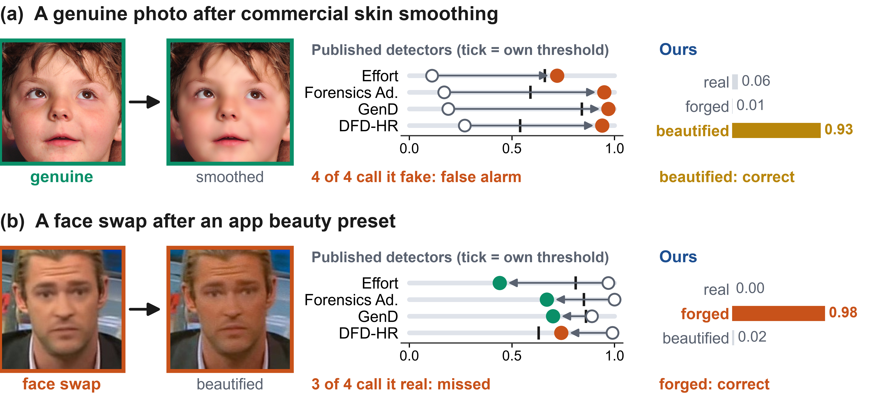
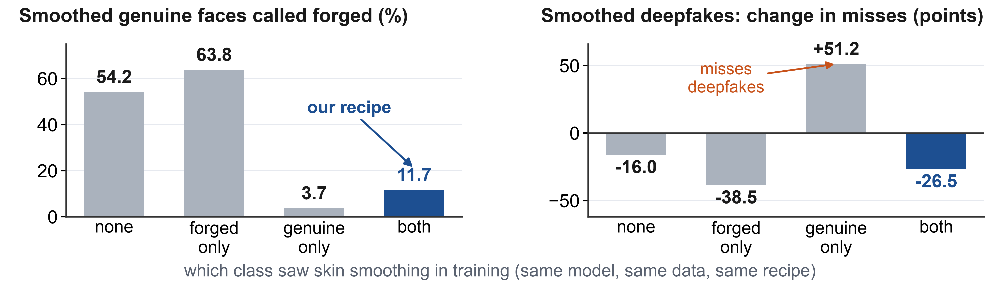
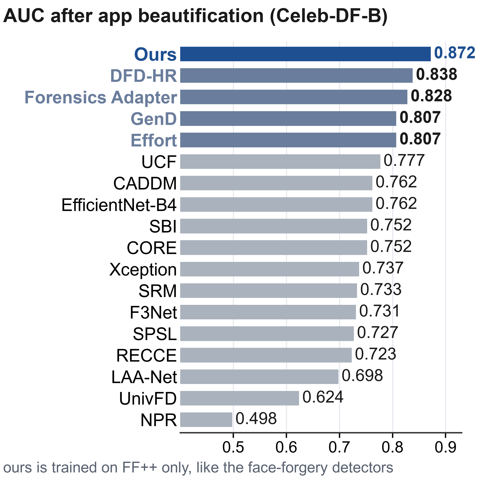
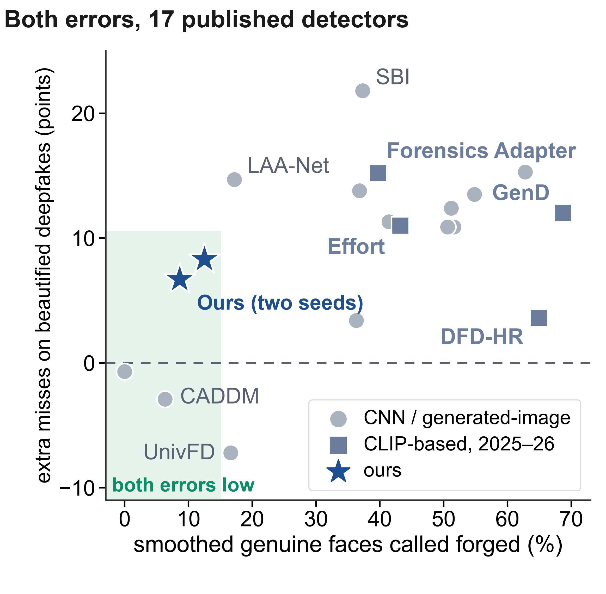
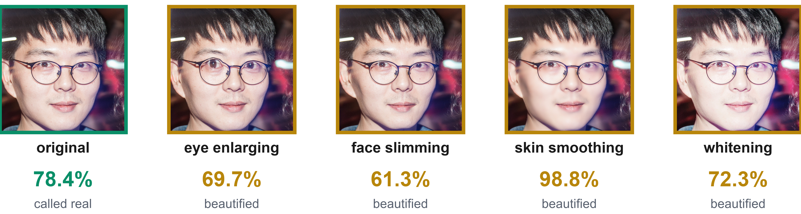
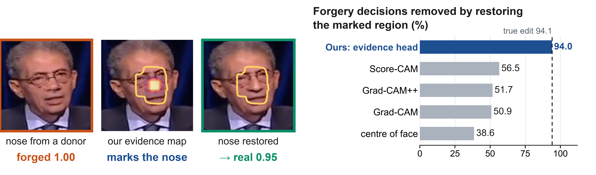
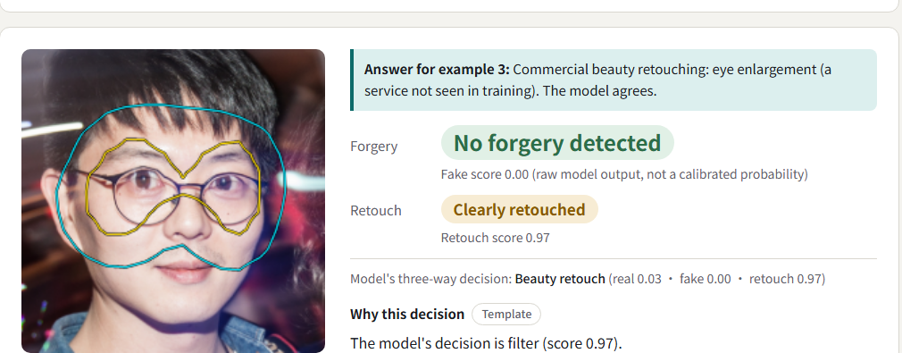

A Face Checker That Separates Beautification from Forgery and Shows Checkable Evidence
林沁瑩 陳柏蓉 余晨杉指導教授：賴尚宏
Photos are beautified before anyone checks them, but forgery detectors only answer real or fake. When we re-run 17 published detectors, 16 of 17 score a smoothed genuine face as more forged than its own original.

One edit, two errors. Open circle: a detector's score before the edit; filled: after. Right: our model's own output on the same two photos.

Smoothing shown to both classes: false alarms 54% → 12%, no extra misses.
Top: three sources of training pairs, each with an exact footprint M. Bottom: the main model on a held-out forgery (grey frozen, blue trained); the classifier never reads the map, so the map can be tested.


Left: ours is highest after beautification (paired 95% CI vs Effort, Forensics Adapter and SBI exclude 0). Right: no published detector is lower than ours on both errors.

Alibaba retouching, never used in training (strength 90, 2,210 faces): share of faces our model calls beautified; the originals it calls real.

Restoring only the part our evidence head marks removes 94% of the forgery decisions, as much as restoring the true edit; heat maps on the same model remove about half.

per photo on an iPhone. Everything runs in the browser and the photo never leaves the device. The browser model is an EfficientNet-B4 with the same heads (17.6 M parameters, 67 MB), within 5 points of the CLIP model on every FF++ class.
Libourel et al., IWBF 2024 · Saeed et al., 2025 · RetouchingFFHQ, ACM MM 2023 · Effort, ICML 2025 · Forensics Adapter, CVPR 2025 · SBI, CVPR 2022 · CLIP, ICML 2021 · LoRA, ICLR 2022